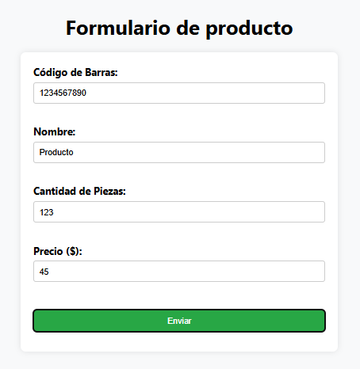
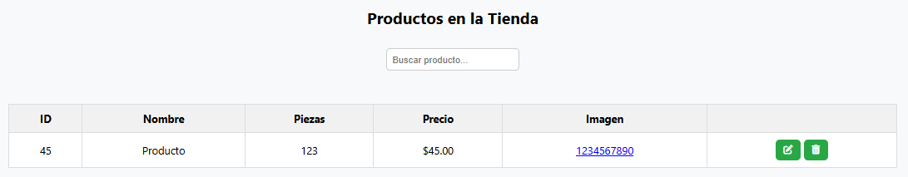
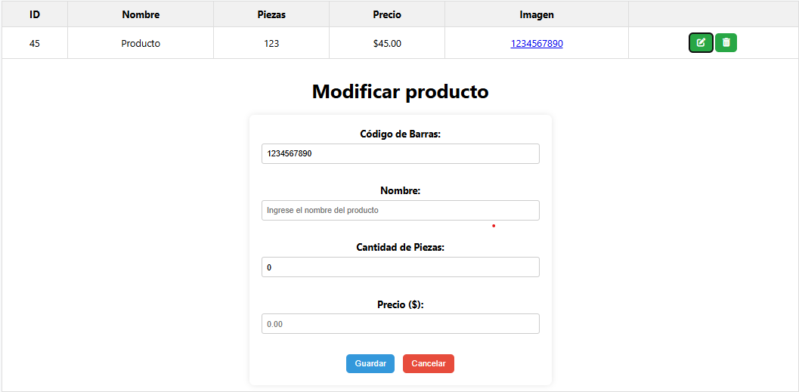
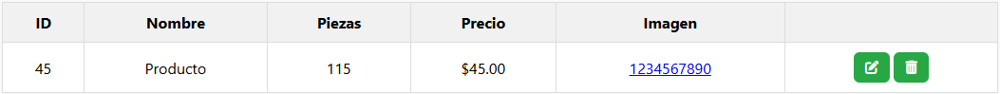
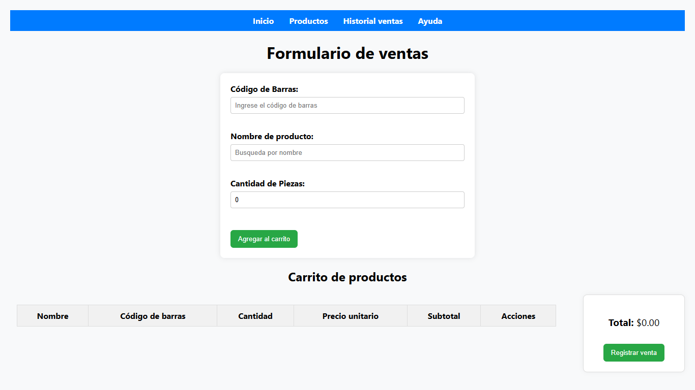
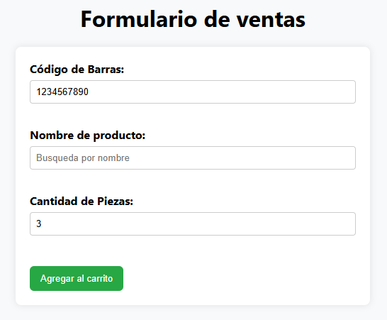
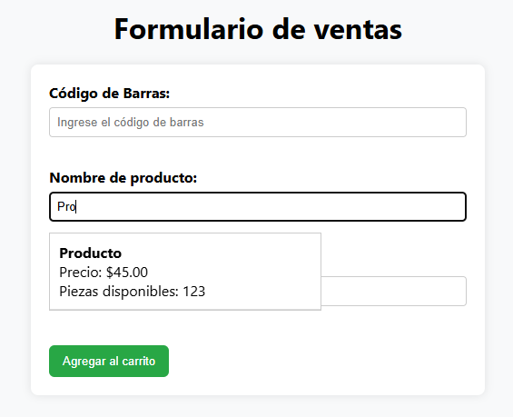
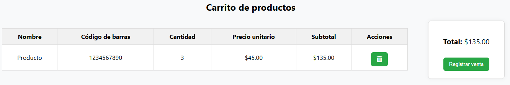
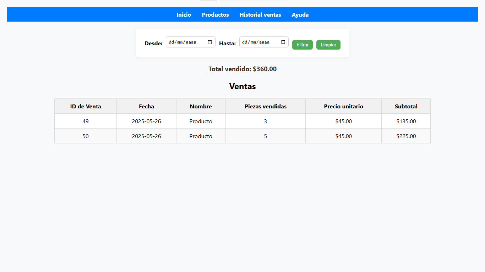
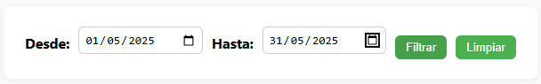

En la pagina "Producto" verás el formulario donde puedes ingresar un nuevo producto. Dicho producto requiere Codigo de Barras, Nombre, Cantidad de piezas y precio, en este mismo orden.
Para ingresar un producto, haz clic en el botón "Agregar Producto" y completa los campos requeridos.

Una vez que hayas ingresado todos los datos, haz clic en "Enviar" para añadir el producto a la lista.
Ahora verás el producto en la lista de productos disponibles.

En esta parte puedes observar dos botones, el botón de la izquierda servirá para editar el producto seleccionado.

Esto sera muy util por si te equivocaste o deseas cambiar el precio incluso las unidades registradas en sistema, por otro lado el botón de la derecha servira para eliminar el producto seleccionado.
Por ultimo, si deseas ver el producto en una imagen, ya sea porque se llaman igual y quieres saber cual es el que necesitas puedes hacer clic en el enlace de color azul

Este realizará una busqueda del código de barras en internet mostrando las mejores coincidencias.
Paso 2: Navegar por el sitio
Una vez que hayas ingresado productos, puedes navegar por el sitio para explorar las demas páginas.
Utiliza el menú superior para acceder a las diferentes secciones como Inicio (Ventas), Productos, Historial y esta seccion llamada Ayuda.
Paso 3: Realizar una compra

Para ingresar los productos dentro del carrito de compras existen dos maneras.
La primera es ingresar el código de barras del producto en el campo "Código de Barras:", agregar las piezas a vender y solo queda dar clic en "Agregar al carrito"
Este será el caso ideal donde se cuente con un lector de códigos de barra o que se teclee manualmente.

La segunda manera es cuando se desconoce el código de barras, utilizaras el nombre del producto y lo selecionaras de la lista desplegable, ingresar las piezas a vender y dar clic en "Agregar al carrito"

Una vez que hayas agregado todos los productos al carrito, puedes proceder a realizar la venta.

En esta sección podrás ver todos los productos que has agregado al carrito, junto con sus cantidades y precios.
Si deseas eliminar un producto del carrito, simplemente haz clic en el botón de eliminar junto al producto correspondiente.
Para finalizar la compra, haz clic en el botón "Registrar Venta".
Paso 4: Revisar el Historial de ventas

Una vez que hayas realizado una venta, puedes revisar el historial de ventas.
En la sección de Historial, podrás ver un registro de todas las ventas realizadas, incluyendo detalles como fecha, productos vendidos y total de la venta.
Ademas que podras filtrar las ventas por fechas, indicando "Desde" y "Hasta" que día quieres ver las ventas realizadas.

Esto te permitirá llevar un control de tus ventas y productos vendidos.
El botón limpiar te permitirá quitar los filtros mostrando todas las ventas realizadas.
¡Listo para empezar!
Ahora que conoces los pasos básicos para utilizar el sistema de ventas, ¡estás listo para comenzar a vender!
Si tienes alguna pregunta o necesitas más ayuda, no dudes en consultar esta sección nuevamente.
¡Buena suerte con tus ventas!
Contacto
¿Tienes dudas, sugerencias o necesitas soporte? Escríbenos a nuestro correo: